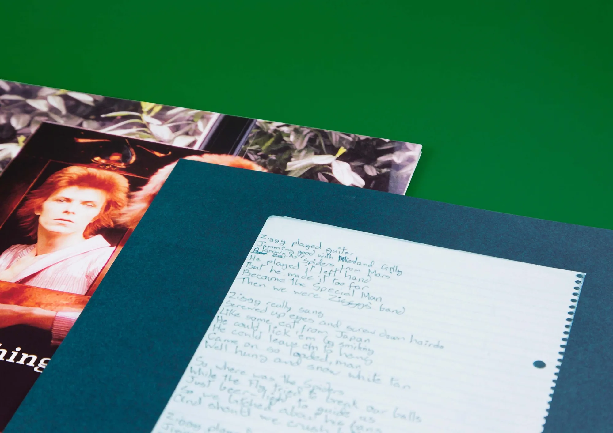
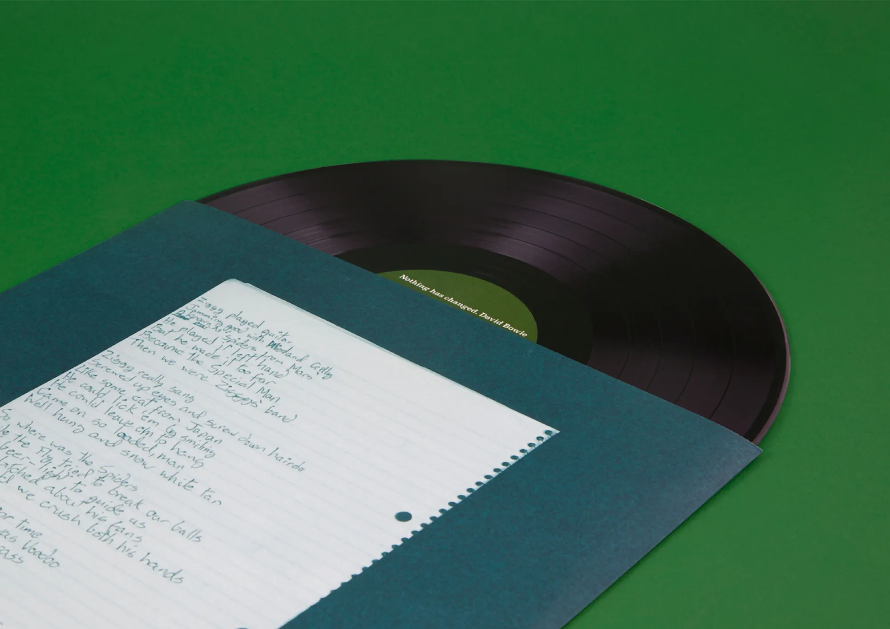

- About
- My role was artworking for a David Bowie album. This internship was an important step in my career, emphasizing the significance of detail and teamwork in design.
- It has motivated me to further my skills and pursue my career with renewed focus.

